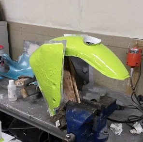

The history behind it
It was early 2015, Oulton Park had a race weekend on. I put in a late entry to just race on the Saturday. Having never riden the chassis before, this was it's debut to see what it could do. My dad was stood on the pitwall monitoring laptimes when he overheard a fellow spectator say 'what's that; looks like a horse', someone responded; 'nah, more like a donkey'. My dad couldn't stop laughing. Problem was, he was right. The name has stuck ever since. What it did promote is the rapid redesign of the fairings. They were ugly and boxy, I needed to put a few months aside to do the job properly this time; build the whole bike as one with clay and plastercene rather than individual components. Making moulds are probably the one area which have cost the most time so far. I’m on the 3rd set now and fortunately I’m nearly there. There will always be changes to make but generally I am pleased with the aero and the look. Building up each component is a bit of a solace for me, I’m busy thinking of holidays and ice cream while I’m applying plastercene and cardboard to build them up to the shape I want. Every so often there’s a need to put on some resin or filler to give the backing some strength so that’s what drags a project out over many weeks.Here's a few I made earlier
This is probably as tricky as I want to go with wet lay moulds as there is multiple opposing compound angles at work which means that releasing the final piece from the mould will rely on a slightly sympathetic layup of layers of fabric to ensure there is enough flex in the structure to manipulate around the mould without breaking.Start from scratch
These 3 are made in my traditional method of using scrap card to get the basic shape; backed with fibreglass resin. Then on with the plastercene to blend the hard edges and then when within 5mm of the final shape I go on with the filler. From here on in there’s about 30 hours on each mould to produce a part. Lots of sanding of the filler then when your happy or you adopt the Chinese methodology of ‘that’ll do’, then your onto spraying a high build primer to seal and provide a harder surface. Guess what’s next; more sanding with fine grit down to a baby bum finish. If you notice small blemishes fill with fine filler otherwise take up yoga and build it up again until you’re happy.PVA release mix
Next step is a coat of PVA glue followed by a coat or 2 of wax (I’ve scraped really priceless work without the wax; maybe my PVA just doesn’t cut it?)

Green gelcoat applied to part
Pop mould off once cured

Lay fabric into mould with resin

Remove part and flatten surface

Clear epoxy coat and polish
Green slime tooling coat applied
Then comes the critical stage; applying the green tooling coat and backing fibreglass to make the mould itself. Leave it to set for a few days and it should pop off; ready to wax and lay in your final produce. These were all carbon with clear epoxy. Pop out, trim and then polish. For these pieces I have used 2 layers of Diolen fabric with one intermediate layer of 240g chopped strand fibreglass to help bond to the shape and one ultra thin layer of reinforced fibreglass fabric cloth at the back to just tidy up and conceal any loose strands to give a smoother finish. I used high temperature epoxy resin as these will hold the hot radiator. Worthy of a mention is the worlds best secret: Diolen. It looks exactly like carbon fibre cloth and to most it will perform the same. From what I have seen most of the cosmetic products out there in the market such as mudguards and general trim are made with Diolen using polyester resin purely for cost; it is in the region of 5 times cheaper to manufacture products this way. Carbon made with epoxy is truly top spec for structural applications with demanding requirements. Diolen with epoxy is great unless you are making a chassis component out of it and then planning on crashing it into the Armco! It’s the epoxy and the process (removing air) that gives a laminate it’s strength, the fabric is not always the focus.The verdict
I’ve gone to town with considering air flow in every area. It's something that just requires time and motivation. Thinking about pressures, volume, effect on drag whilst trying to balance each commodity to achieve an overall balance. Most of which has worked out ok (in the end); airflow for cooling is spot on but unfortunately at the demise of the high pressure feed to the airbox. Ideal high pressure volume is down by about 30% so I’m missing out on the optimum ram air effect. My dad always reminds me that’s not a problem; as it doesn’t go fast enough anyway! Positive ram air effect in the region of 1bar is typically generated at >150mph. Here’s a picture of all the cooling works, tunnels and scoops to keep the donkey from melting it’s pistons again.Other features
Little fins on the tank were added to expel the excess volume that gets pulled into the low pressure area behind the front fairing and finds itself pushing against the underside of the tank cover. Something I discovered in 2016 when at top speed; the tank cover popped up and tapped me on the chin. Concequently the pressures are now well directed and the cover well secured. The frontal area is not great due to all this ducting work; however it does shield the rider; me, far better than any other bike out there. I can only assume that the likes of Honda have analysed the trade off between rider extremities creating drag and wake Vs the additional frontal area to the overall drag coefficient and deemed that 'narrow as possible' is best? My thinking is potentially lagging behind as my work seems to resemble the conventional methods; widest point as far forward as possible, gentle reduction in form for the longest period possible making sure the wake is not too abrupt. Bike’s have a pretty terrible drag coefficient because of their length and the relative wake they create.Ideally I think there is scope to effectively channel air from the high pressure area even better than I have to reduce the effective frontal area and control the flow through voids behind the fairings and gently merge with the wake. You can see this train of thought at work in the F1 world.
Just a few of the many moulds hanging from the walls